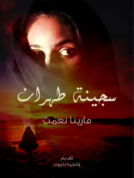

سجينة طهران: قصة نجاة امرأة داخل أحد السجون الإيرانية

قراءة عربية أصلية محددة النطاق في الصفحات 19 إلى 24 من ملف PDF المرتبط، وليست تلخيصا كاملا للكتاب. نناقش ما تدعمه هذه المقاطع فقط.
سجينة طهران: محارة وحبة رمل ولؤلؤة
تستفتح المقدمة باستعارة المحارة التي تضربها رملة فتتكور ذكرياتها وتصفو لتخرج لؤلؤة مشعة؛ فأما المحارة فبطلة الرواية التي فرت إلى كندا بعد إحكام الخميني قبضته على إيران، وأما حبة الرمل فباريسا التي ألمحت أنها كانت مثلها من سجينات إيفين، فأُطلقت شياطين ذاكرتها: «ما دمت لا أستطيع النسيان، فربما يكون الحل في التذكر». وأما اللؤلؤة فهذه الرواية: قصة مارينا نعمت، الفتاة المسيحية الطهرانية، حين انتُزعت تلميذةً إلى سجن إيفين لتجرب التعذيب وتشهد مقتل صبي أو صبية من ورود إيران؛ ولم يبرحها الشعور بالإثم فقد نجت حين مات كثيرون ممن قالوا «لا». قُبض عليها عام ١٩٨٢ فعانت عامين وشهرين، مرورًا بزواجها القسري من جلادها الذي أحبها ولم تحبه، وإسلامها القسري، وتحررها بمصرعه، فزواجها من خطيبها القديم، حتى هروبها إلى كندا. ثم تعرض المقدمة الثورة: قامت عام ١٩٧٩ وأطاحت بالشاه أملًا في إيران أحرر، فقفزت التيارات الدينية عليها وركل الخميني الديمقراطية التي أجلسته، وحل محلها حكم الفرد والتصفية. وتختم روايتها بالعبارة: «الخوف أفظع السجون على الإطلاق».
زاوية وحدود القراءة
قراءة موجزة من ص ١٩ إلى ص ٢٤ من أصل ٣٠٢ صفحة، تعرض مقدمة الكتاب، لا الكتاب كاملًا.
الطبعة والقراءة
هذه الترجمة العربية صادرة ومتاحة مجانًا بموجب اتفاق قانوني بين مؤسسة هنداوي وبيفرلي سلوبن ليتراري إجنسي. حقوق الترجمة محفوظة لمؤسسة هنداوي.
تنزيل PDF المجاني ↓ القراءة والمصدر الرسمي ↗